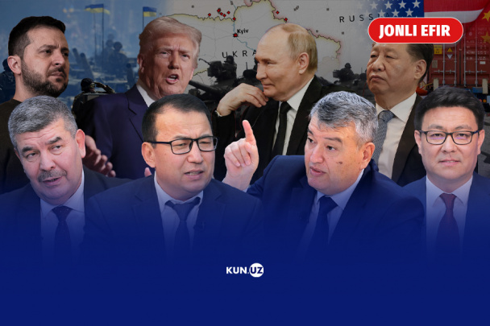

Rubioning bayonotiga qaralsa, AQSh Ukrainada tinchlikka erishish intilishlaridan sovib, qo‘lini qo‘ltig‘iga urishga tayyor. Parijda esa “mustahkam tinchlik” sxemalari muhokamasi davom etmoqda. Lavrov To‘qayevning hududiy yaxlitlik haqidagi gaplariga javob qaytardi. Rossiya “Tolibon”ni reabilitatsiya qilmoqda. Makron Netanyahu bilan muloqotda Falastinni tan olish bilan tahdid qildi.
